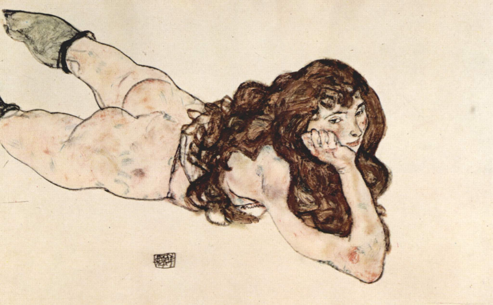

Fun
Apart from academics, I have a deep interest in literature, art, music, films and other arts. If you want to get to know me better, here’s a list of some of my tastes
Literature
- Bolaño, Roberto. 2666
- Quiroga, Horacio. Stories of Love, Madness and Death
- Vargas Llosa, Mario. The city and the dogs
- Cortázar, Julio. All Fires The Fire
- García Márquez, Gabriel. Love in the Time of Cholera
- Joyce, James. Dubliners
- Salinger,J.D. The heart of a broken story. Esquire. 1941
Art
I am a big fan of Egon Schiele. There is a morbid beauty in Schiele’s paintings. His ubiquitous expression of instinct and desire even evoking death and fear. Eroticism and violence are the eternal themes of art. For some reason, love is always associated with self-destruction in my eyes.


I have systematically read works on modernism art including Baudelaire, T.J. Clark and Clement Greenberg.
If you want to read this long redundancy, there is my favourite little poem written by Jorge Luis Borges.
What can I hold you with?
I offer you lean streets, desperate sunsets, the moon of the jagged suburbs.
I offer you the bitterness of a man who has looked long and long at the lonely moon.
I offer you my ancestors, my dead men, the ghosts that living men have honoured in bronze:
my father’s father killed in the frontier of Buenos Aires, two bullets through his lungs, bearded and dead, wrapped by his soldiers in the hide of a cow; my mother’s grandfather –just twentyfour– heading a charge of three hundred men in Peru, now ghosts on vanished horses.
I offer you whatever insight my books may hold, whatever manliness or humour my life.
I offer you the loyalty of a man who has never been loyal.
I offer you that kernel of myself that I have saved somehow –the central heart that deals not in words, traffics not with dreams, and is untouched by time, by joy, by adversities.
I offer you the memory of a yellow rose seen at sunset, years before you were born.
I offer you explanations of yourself, theories about yourself, authentic and surprising news of yourself.
I can give you my loneliness, my darkness, the hunger of my heart; I am trying to bribe you with uncertainty, with danger, with defeat.
Films
French and Italian films are part of my life. In times of suffering in my life during the Covid, The New Wave (French: La Nouvelle Vague) saved me from this hardship. With films and cigarettes, the bitterness of life seems to be sweetened with a touch of hope.
- Bertolucci, Bernardo. The Dreamers
- Godard, Jean-Luc. À bout de souffle
- Truffaut, François. Les quatre cents coups
- Buñuel, Luis. Le Charme discret de la bourgeoisie
- Arcand, Denys . Les Invasions barbares
- Kaige, Chen . Farewell My Concubine